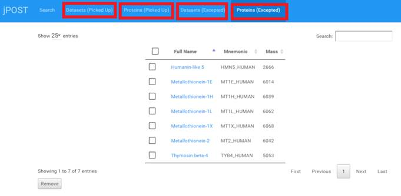
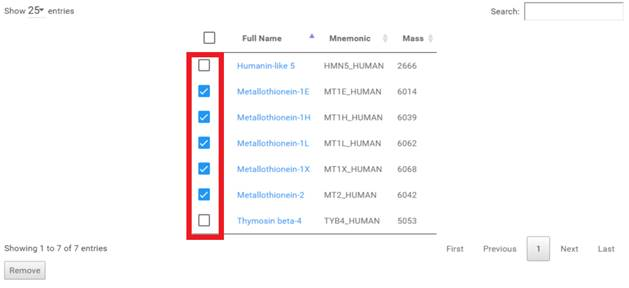
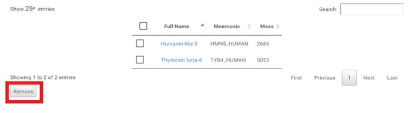

ピックアップリスト、除外リストから項目を削除する。
-
トップメニューの [Datasets (Picked Up)],
[Proteins (Picked Up)], [Datasets (Excepted)], [Proteins (Excepted)]
いずれかを選択して、操作したい項目リストを表示します。

- 削除したい項目にチェックを入れます。

-
3. [Remove] ボタンをクリックすると、チェックした項目が項目リストから削除されます。
(DB の中のデータが削除される訳ではありません。)
